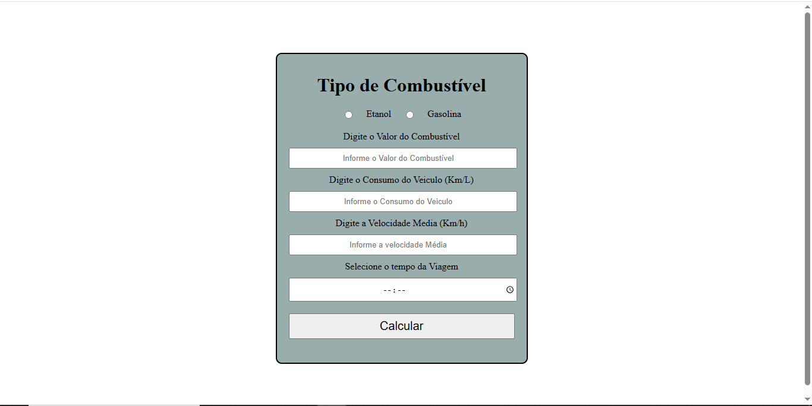

Loja de Skate
Desenvolvimento de um protótipo para uma loja de skate feito em sala de aula no Senai utilizando HTML CSS e JavaScript.
Ver Projeto

App para Viagens
Desenvolvimento de um App para Saber Tempo de Viagem Quilometragem Percorrida e Consumo de Combustível utilizando HTML CSS e JavaScript.
Ver ProjetoSite de Igreja
Desenvolvimento de um Protótipo para a Igreja utilizando HTML CSS e JavaScript .
Ver Projeto